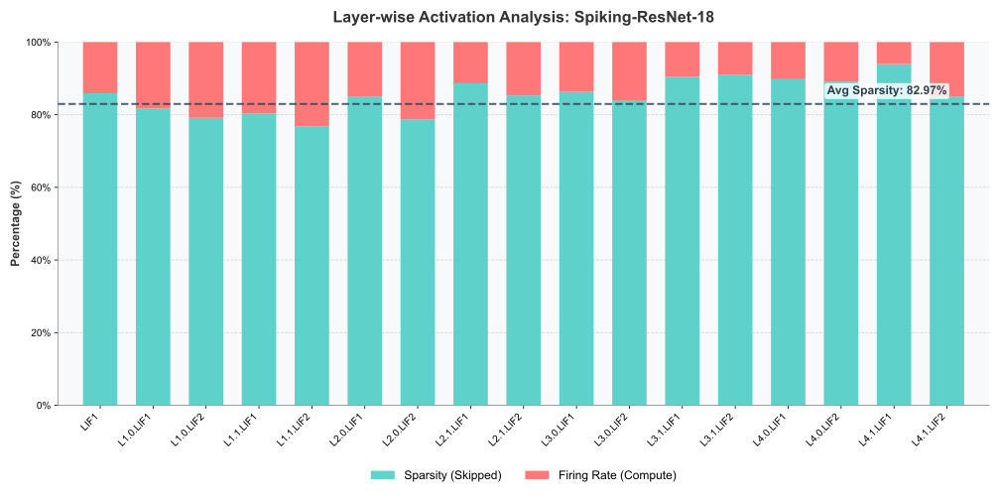
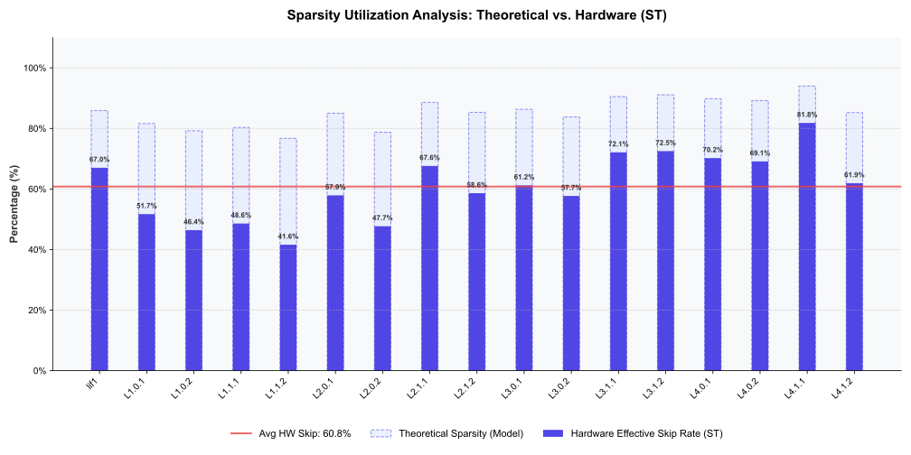

国家重点研发计划 · 经费 4182 万元
高能效脉冲神经网络异构计算芯片设计
基于空时折叠与稀疏感知的 ASIC 前端设计
芯片前端全流程负责人 · 算法映射 / 架构定义 / RTL 实现 / FPGA 验证
项目亮点
- 空时折叠并行：时域双链路展开 + 空域逻辑分时复用
- 动态稀疏感知：标志位扫描剔除 82.97% 无效零计算
- 残差注入累加：复用 PE 逻辑，消除片外残差带宽依赖
- 80 FPS @ 200MHz，CIFAR-10 精度 93.14%
技术栈
SystemVerilog
ASIC 前端
Python
Synopsys DC
SpyGlass
项目背景
国家重点研发计划《高能效类脑器件及其智能芯片关键技术研究》子课题。
针对 SNN 网络时间步迭代计算翻倍与访存带宽瓶颈两大核心挑战，
主导设计面向 Spiking-ResNet-18（T=2） 的 ASIC 加速架构，
将算法理论直接映射为可交付芯片前端的完整工程产出。
项目归属
国家重点研发计划
《高能效类脑器件及其智能芯片关键技术研究》
项目经费：4182 万元
担任角色
芯片前端全流程负责人
独立负责：算法映射策略 · 微架构定义 · RTL 实现 · FPGA 原型验证 · 前端交付文档
核心挑战
- T=2 时间步迭代导致等效计算量翻倍
- SNN 首层密集数据与深层稀疏脉冲的处理差异性
- 残差连接对片外存储带宽的强依赖（访存墙）
架构方案：异构双核驱动体系
针对 SNN 网络数据分布的差异性，采用"精细化分工"策略，
通过异构微核分别处理密集首层与稀疏深层，实现算力与能效的双重最优。
 图 1 · 异构双核驱动的 SNN ASIC 加速架构（DEC 密集核 + SAC 稀疏核）
图 1 · 异构双核驱动的 SNN ASIC 加速架构（DEC 密集核 + SAC 稀疏核）
高保真特征提取算子 (DEC)
专为首层密集数据设计，采用高位宽处理路径与流水线 MAC 阵列，
直接对原始输入进行高保真卷积，规避传统脉冲编码的信息丢失，
奠定系统整体识别率的精度基石。
稀疏感知加速阵列 (SAC)
专为深层脉冲数据设计，采用脉冲驱动计算机制与动态稀疏扫描逻辑，
精准捕捉有效脉冲触发运算，充分挖掘空时稀疏性带来的能效红利。
全片上驻留策略
利用 SNN 脉冲数据极低位宽特性，构建全片上缓存体系。
残差支路数据在片内暂存与复用，彻底消除深层网络对片外存储带宽的依赖。
架构创新与关键技术突破
⏱️
空时折叠并行策略
时域物理叠层：构建物理并行的双重计算链路，
将原本串行的多时间步运算进行时域展开并行处理，
有效消除时间维度迭代带来的推理时延开销。
空域逻辑分时：设计动态资源调度器与冲突分拍机制，
通过时间片轮转复用核心算力逻辑，在显著降低面积开销的同时支撑大规模通道并发。
⚡
动态稀疏感知机制
前瞻标志位扫描：在计算流水线前级部署高吞吐扫描逻辑（Scanner），
实时预判输入数据有效性，精准剔除无效零值操作。
细粒度门控关断：基于扫描结果生成动态使能信号，
对无效数据通路实施时钟门控，充分挖掘网络高达 82.97% 的脉冲稀疏性。
🔁
残差流硬件映射优化
注入式累加架构：构建"先注入后累加"数据流，
利用 PE 空闲时隙将残差预注入累加器，复用核心算术逻辑完成残差融合，
规避独立加法器阵列的面积冗余。
脉冲全片上驻留：残差支路数据完全片内暂存复用，
消除深层网络残差连接对片外存储的带宽依赖。
稀疏性分析与跳零机制
SNN 网络的脉冲稀疏性是能效提升的核心来源。
通过对各层激活稀疏度分布的精确建模，指导硬件扫描逻辑的最优设计。

图 2 · Spiking-ResNet-18 各层脉冲稀疏度分布（综合稀疏度 82.97%）

图 3 · 标志位扫描器驱动的跳零机制示意
设计评估指标
以下核心指标基于 200 MHz 时钟频率下的 SystemVerilog RTL 仿真验证结果。
🚀 极致速度
- 基于 64-Worker 全并行架构
- 80 FPS 突破 SNN 实时性瓶颈
- 轻松满足 60Hz 实时视频流处理需求
⚡ 高精低耗
- 混合精度量化策略保持 93.14% 精度
- 标志位扫描器将稀疏性转化为功耗收益
- 82.97% 无效计算被精准剔除
💾 存储优化
- 模型参数极低位宽优化，~8.0x 压缩比
- 网络参数全片上驻留，消除片外带宽依赖
- 残差数据完全在片内闭环，零片外回写
系统闭环与验证流程
构建从算法训练到硬件交付的完整闭环验证流水线，确保 RTL 实现与算法设计的端到端一致性。
自动化数据闭环
Python 完成 SNN 算法训练、混合精度量化及权重 / 激励数据导出，
自动生成 RTL 仿真所需的测试向量，
并与仿真输出进行端到端数据一致性校验。
RTL 仿真验证
覆盖 DEC / SAC 双核路径、稀疏标志位扫描逻辑、
残差注入时序及跨模块握手协议，
确保各模块在边界条件下无数据错误与时序冲突。
前端设计交付
提供严谨的 RTL 代码库、
Lint / CDC 检查报告（SpyGlass 零违规）
以及详细的微架构说明文档，满足后端流程接收标准。
技术探讨
本页面侧重于架构级方案与工程产出展示。
关于「物理链路叠层的 RTL 优化细节」「训练—量化—硬件映射的一致性保证」
以及「残差累加过程中的时序收敛策略」等核心深度细节，
欢迎在专业交流中展开进一步探讨。